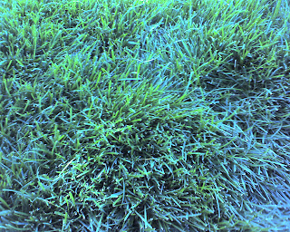

Skip to the record
Threads
The Wayback
Recovered weblog entry
Look! Real grass.
August 28, 2007
/
RyanDavid Burningham

Newer
Union Pacific
Older
It's 5:25am..what the heck
Dig somewhere else
Wait in Anticipation
Verse Archive